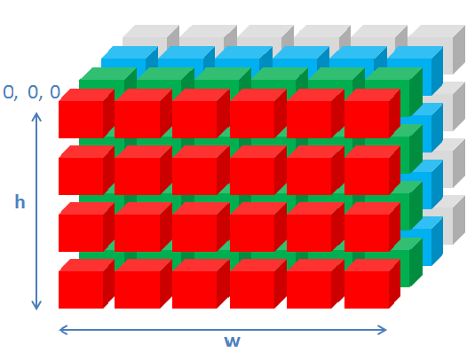
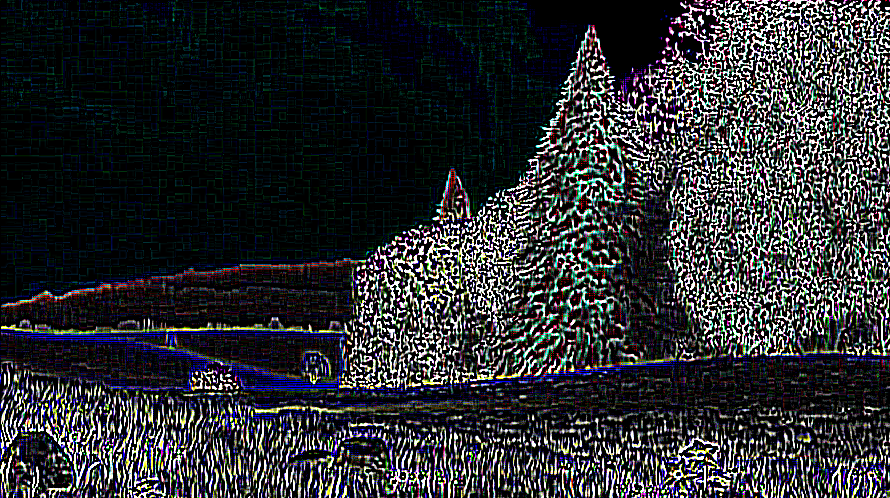

Index
1. Setup2. The Skeleton
3. Manipulating pixels on canvas
4. Sepia Toning
5. Stereoscopic 3D
6. Edge Detection/Sharpening
7. Color-based Face Detection
Setup
Download and Install
If you have not already, download and install River Trail. To be able to use a video stream from a webcam you will also need Rainbow.Configure
Because of Firefox's security policies, you may have to install Apache (or any other webserver) and configure it so that it serves files from the River Trail directory.Verify
Check if you can run the examples in rivertrail/examples by loading them in Firefox. If you can, you are good to go.The Skeleton
The directory rivertrail/examples/video-app contains a skeleton for the video application that you can start with. Load upindex.html in this directory in Firefox and you should see the
default screen for the application skeleton:
 The large box in the center is a
Canvas that is used for rendering the video output. The
video input is either a HTML5 video stream embedded in a
video tag or live video caputured by a webcam. On the
right of the screen you will see the various filters that can applied
to this input video stream - sepia toning, lightening, desaturation
etc. Click on the box in the center screen to start playback and try
out these filters. To switch to webcam video, click the "Webcam" toggle in
the top-left corner.
The sequential JavaScript versions of the filters on the right are already
implemented and in this tutorial we will implement the "parallel"
versions using River Trail. Before we dive into implementation, lets
look at the basics of manipulating video using the Canvas API.
The large box in the center is a
Canvas that is used for rendering the video output. The
video input is either a HTML5 video stream embedded in a
video tag or live video caputured by a webcam. On the
right of the screen you will see the various filters that can applied
to this input video stream - sepia toning, lightening, desaturation
etc. Click on the box in the center screen to start playback and try
out these filters. To switch to webcam video, click the "Webcam" toggle in
the top-left corner.
The sequential JavaScript versions of the filters on the right are already
implemented and in this tutorial we will implement the "parallel"
versions using River Trail. Before we dive into implementation, lets
look at the basics of manipulating video using the Canvas API.
Manipulating pixels on Canvas
Open upmain.js in your favorite code editor. This file implements
all the functionality in this web application except the filters
themselves. When you load the page, the "doLoad()" function is called
after the body of the webpage has been loaded. This function sets up
the drawing contexts, initializes the list of filters (or kernels)
and assigns a click event handler for the output canvas.
The computeFrame() function is the workhorse that reads an input
video frame, applies all the selected filters on it to produce an
output frame that is written to the output canvas context.
The code below shows how a single frame from a HTML video element is drawn to a 2D context associated with a canvas element.
// main.js : computeFrame()
output_context.drawImage(video, 0, 0, output_canvas.width,
output_canvas.height);
After this video frame is drawn to canvas, we need to capture the
pixels so that we can apply our filters. This is done by calling
getImageData() on the context containing the image we want to
capture.
// main.js : computeFrame(), line number 249
frame = input_context.getImageData(0, 0, input_canvas.width,
input_canvas.height);
len = frame.data.length;
w = frame.width ; h = frame.height;
Now we have an ImageData
object called frame. The data attribute of this
object contains the pixel information and the "width"/"height" attributes
contain the dimensions of the image we have captured.
The data attribute contains RGBA values for each pixel in a row-major format.
That is, for a frame with h rows of pixels and w columns, it contains a
1-dimensional array
of length w * h * 4 as shown below:
So for example to get the color values of a pixel in the 100th row and 50th column in the image, we would do:
var red = frame.data[100*w*4 + 50*4 + 0];
var green = frame.data[100*w*4 + 50*4 + 1];
var blue = frame.data[100*w*4 + 50*4 + 2];
var alpha = frame.data[100*w*4 + 50*4 + 3];
To set, for example the red value of this pixel, simply write the new value at the
offset shown above in the frame.data buffer.
Sepia Toning
Sepia Toning is a process performed on black-and-white print photographs to give them a warmer color. This filter simulates the sepia toning process on digital photographs or video. Let us first look at the sequential implementation of this filter in the function calledsepia_sequential() in filters.js.
function sepia_sequential(frame, len, ctx) {
var pix = frame.data;
var r = 0, g = 0, b = 0;
for(var i = 0 ; i < len; i = i+4) {
r = (pix[i] * 0.393 + pix[i+1] * 0.769 + pix[i+2] * 0.189);
g = (pix[i] * 0.349 + pix[i+1] * 0.686 + pix[i+2] * 0.168);
b = (pix[i] * 0.272 + pix[i+1] * 0.534 + pix[i+2] * 0.131);
if(r>255) r = 255;
if(g>255) g = 255;
if(b>255) b = 255;
if(r<0) r = 0;
if(g<0) g = 0;
if(b<0) b = 0;
pix[i] = r;
pix[i+1] = g;
pix[i+2] = b;
}
ctx.putImageData(frame, 0, 0);
}
Remember from the previous snippet that the frame.data buffer
contains color values as rgbargbargba.... The
for loop in line 823
iterates over this buffer and for each pixel it reads the red, green
and blue values (which are in pix[i],
pix[i+1] and pix[i+2] respectively).
It computes a weighted average of these colors to produce the new
red, green, blue values for that pixel. It then clamps the new
red, green and blue values to [0, 255] and writes them back into the
"data" buffer. When the loop is finished, we have replaced the RGB
values for all the pixels with their sepia-toned values and we can
now write the image back into the output context ctx
with the putImageData()
method. The result should look like this (image on the left is the
original frame, image on the right is the output): 

Can we make this parallel?
If you look closely at thesepia_sequential function
above, you'll notice that each pixel can be processed independently
of all other pixels as its new RGB values depend only on its current
RGB values. And each iteration of the for loop does
not produce or consume side-effects. This makes it easy to
parallelize this operation with River Trail.
Recall that the ParallelArray type has a constructor that takes a canvas object as an arugment and returns a freshly minted ParallelArray object containing the pixel data.
var pa = new ParallelArray(canvas);
This creates a 3-dimensional ParallelArray pa with shape
[h, w, 4] that looks like the following:

So for pixel on the canvas at coordinates (x, y), pa.get(x, y, 0)
will contain the red value, pa.get(x, y, 1) will contain the green
value and pa.get(x, y, 2) will contain the blue value.
The input ParallelArray that is given to the filter(s) (line 253, main.js):
else if (execution_mode === "parallel") {
stage_output = stage_input = new ParallelArray(input_canvas);
w = input_canvas.width; h = input_canvas.height;
}
stage_input and stage_output are
ParallelArray objects that contain the input and output pixel data
for each filtering "stage". Now lets look at the code that causes the
filters to be applied (line 271, main.js):
if(execution_mode === "parallel") {
switch(filterName) {
case "sepia":
case "lighten":
case "desaturate":
case "color_adjust":
case "edge_detect":
case "sharpen":
case "A3D":
case "face_detect":
break;
default:
}
// Make this filter's output the input to the next filter.
stage_input = stage_output;
}
You will see that this code block is wrapped in a for
loop that iterates over all the available filters.
To implement a
particular filter, we add code to produce a new ParallelArray object
containing the transformed pixel data and assign it to
stage_output.
So for example, for the sepia filter, we would write:
...
switch(filterName) {
case "sepia":
stage_output = /*new parallel array containing
transformed pixel data */;
break;
...
Now, all we have to do above is produce a new ParallelArray object
on the right-hand-side of the the statement above.
We can produce this new ParallelArray one of two ways - by using the
powerful ParallelArray constructor or by using the combine method.
Let us look at the constructor approach first. Recall the the comprehension constructor has the following form:
var pa = new ParallelArray(shape_vector, elemental_function,
arg1, arg2..);
where elemental_function is a JavaScript function that produces the
value of an element at a particular index in pa.
Recall that the input to our filter stage_input is a [h,
w, 4] shaped ParallelArray. You can think of it as a two-dimensional
ParallelArray with shape [h, w] in which each element (which corresponds to
a single pixel) is itself a ParallelArray of shape [4].
The output ParallelArray we will
produce will have this same shape - we will produce a new
ParallelArray of shape [h, w] in which each element has a shape of
[4], thereby making the ParallelArray have a final shape of [h, w, 4].
Modify line 275 to this:
...
switch(filterName) {
case "sepia":
stage_output = new ParallelArray([h, w], kernelName,
stage_input);
break;
...
The first argument [h, w] specifies the shape of the new
ParallelArray we want to create.
kernelName is a Function object pointing to the
sepia elemental function (that we will talk about in a moment) and
stage_input is an argument to this elemental
function. This line of code creates a new
ParallelArray object of shape [h, w] in which each element is
produced by executing the function kernelName. This
new ParallelArray is then assigned to stage_output.
Finally, we have to create the elemental function that produces the color values for each pixel. You can think of it as a function that when supplied indices, produces the ParallelArray elements at those indices. Create a function called
sepia_parallel in filters.js as follows:
// elemental function for sepia
function sepia_parallel (indices, frame) {
}
The first argument indices is a vector of indices from the
iteration space [h, w]. indices[0] is the index along
the 1st dimension (from 0 to h-1) and indices[1] is the index along
the 2nd dimension (from 0 to w-1).
The frame parameter is the ParallelArray object that was passed as an
argument to the constructor above.Now let's fill in the body of the elemental function.
// elemental function for sepia
function sepia_parallel (indices, frame) {
var i = index[0];
var j = index[1];
var old_r = frame[i][j][0];
var old_g = frame[i][j][1];
var old_b = frame[i][j][2];
var a = frame[i][j][3];
var r = old_r*0.393 + old_g*0.769 + old_b*0.189;
var g = old_r*0.349 + old_g*0.686 + old_b*0.168;
var b = old_r*0.272 + old_g*0.534 + old_b*0.131;
return [r, g, b, a];
}
In lines 3-9, we grab the indices and read the RGBA values from the
input ParallelArray frame. then, just like in the
sequential version we mix these colors in lines 11-13 and return a
4-element array consisting of the new color values for the pixel at
position i, j.
And thats it. Select the "River Trail" toggle on the top-right of the
app screen and play the video. You should see the same sepia toning
effect you saw with the sequential implementation.The River Trail compiler takes your elemental function and parallelizes its application over the iteration space. Note that you did not have to create or manage threads, write any non-JavaScript code or deal with race conditions and deadlocks.
Exercise
We could have also implemented the sepia filter by calling thecombine method on the stage_input ParallelArray.
Let us try and write that.
stage_output = stage_input.combine(1, function(index) {
var old_r = this.get(index, 0);
var old_g = this.get(index, 1);
var old_b = this.get(index, 2);
var a = this.get(index, 3);
var r = old_r * 0.393 + old_g * 0.769 + old_b * 0.189;
var g = old_r * 0.349 + old_g * 0.686 + old_b * 0.168;
var b = old_r * 0.272 + old_g * 0.534 + old_b * 0.131;
return [r, g, b, a];
});
Edge Detection and Sharpening
Let's move on to something a little more complicated - edge detection and sharpening. Edge detection is a common tool used in digital image processing and computer vision that seeks to highlight points in the image where the image brightness changes sharply. Select the edge detection effect and click play to look at the result of the effect.

There are many diverse approaches to edge detection but we are
interested in the most popular 2D discrete convolution
based approach.
 At a high-level, discrete convolution on a single pixel in an image
involves taking this pixel (shown in dark blue above) and computing the
weighted sum of its neighbors that lie within some specific window to produce the output pixel (shown in dark
red above). The weights and the window are described by the convolution
kernel. This process is repeated for all the pixels to produce
the final output of the convolution.
At a high-level, discrete convolution on a single pixel in an image
involves taking this pixel (shown in dark blue above) and computing the
weighted sum of its neighbors that lie within some specific window to produce the output pixel (shown in dark
red above). The weights and the window are described by the convolution
kernel. This process is repeated for all the pixels to produce
the final output of the convolution.
Consider a 5x5 matrix convolved with a 3x3 kernel as shown below. For simplicity, we are only interested in the input element highlighted in blue.
 The weighted sum for this element is:
The weighted sum for this element is:(1*2) + (1*3) + (2*0) +
(2*0) + (2*1) + (1*3) +
(1*3) + (5*0) + (0*3) +
= 13. The value of this element in the output matrix is therefore 13.
You can take a look at the sequential implementation of edge detection in
edge_detect_sequential in filters.js. Don't worry about
understanding it in detail yet.
Let us try and implement this using RiverTrail. Make a function called
edge_detect_parallel in filters.js.
function edge_detect_parallel(index, frame, w, h) {
var m = index[0];
var n = index[1];
var ekernel = [[1,1,1,1,1], [1,2,2,2,1], [1,2,-32,2,1], [1,2,2,2,1], [1,1,1,1,1]];
var kernel_width = (ekernel.length-1)/2; // will be '2' for this kernel
var neighbor_sum = [0, 0, 0, 255];
}
The first two lines of the body are the same as the beginning of the
parallel sepia implementation. (m, n) is now the position of a pixel in
the input ParallelArray frame. The variable
ekernel is the 5x5 kernel we will be using for
convolution (you can copy this over from the sequential version). And
we also need a 4 element array neighbor_sum to hold the weighted sum.
At this point we have an input frame (
frame) and a
specific pixel (m, n) which we will call the "input pixel". Now we need to define a "window" of
neighboring pixels such that this window is centered at this input
pixel. We can define such a window by using a nested loop as follows:
function edge_detect_parallel(index, frame, w, h) {
var m = index[0];
var n = index[1];
var ekernel = [[1,1,1,1,1], [1,2,2,2,1], [1,2,-32,2,1], [1,2,2,2,1], [1,1,1,1,1]];
var kernel_width = (ekernel.length-1)/2; // will be '2' for this kernel
var neighbor_sum = [0, 0, 0, 255];
for(var i = -1*kernel_width; i <= kernel_width; i++) {
for(var j = -1*kernel_width; j <= kernel_width; j++) {
var x = m+i; var y = n+j;
}
}
}
And there. We have a 2D window that runs from -2 to 2.